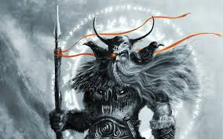

О́дин, или Во́тан (прагерм. *Wōđanaz или *Wōđinaz; др.-сканд. Óðinn) — верховный бог в германо-скандинавской мифологии, отец и предводитель асов, сын Бора и Бестлы, внук Бури. Мудрец и шаман, знаток рун и сказов (саг), царь-жрец, колдун-воин, бог войны и победы, покровитель военной аристократии, хозяин Вальхаллы и повелитель валькирий. Супруга — Фригг.
В соответствии с германо-скандинавскими эсхатологическими мифами, в день Рагнарёка Один будет убит чудовищным волком Фенриром.
Род Одина
Происхождение
Один, а также его братья Вили и Ве, были сыновьями Бора и Бестлы. Бор был сыном Бури, которого вылизала языком изо льда корова Аудумла, в свою очередь, возникшая от смешения пламени Муспельхейма и холода Нифльхейма. Бестла, мать Одина, была дочерью Бёльторна, предположительно сына Имира, который возник таким же образом, каким и Аудумла.
Сыновья и потомки
Сыновьями Одина от его жены Фригг были Бальдр, Хёд, Хермод.
Но у Одина имеется множество детей-богов от разных матерей. К ним относятся:
- От Ёрд (Фьёргюн): Тор.
- От Ринд: Вали (Бой).
- От Грид: Видар.
- От «девяти матерей»: Хеймдалль.
- От Гуннхольд: Браги.
- От сестры Гимира: Тюр.
У Одина были также и сыновья, которые считается родоначальниками разных династий. Большая их часть - люди. Некоторые из них:
- Ингви (Фрейр) — родоначальник Инглингов, королей Швеции;
- Сиги — родоначальник Вёльсунгов, королей гуннов;
- Сэминг — родоначальник Сэмингов, королей Норвегии;
- Гаути — родоначальник королей готов;
- Сирглами — родоначальник конунгов Гардарики (Руси);
- Векта — родоначальник Веттинов, королей Саксонии, Кента и Берниции;
- Белдег — родоначальник королей Вестфалии, Дейры и Уэссекса;
- Витлег — родоначальник королей Мерсии;
- Касере — родоначальник королей Восточной Англии;
- Винта — родоначальник королей Линдисфарна.
Имя
Этимология и происхождение
Древнескандинавский теоним Óðinn (рунический ᚢᚦᛁᚾ на фрагменте черепа из Рибе)[4] является родственным другим средневековым германским именам, включая древнеанглийское Wōden, древнесаксонское Wōdan, древнеголландское Wuodan и древневерхненемецкое Wuotan (Старобаварский Wûtan)[5][6][7]. Все они происходят от реконструированного протогерманского теонима мужского рода *Wōđanaz (или *Wōdunaz). *Wōđanaz, переводимое как «повелитель безумия» или «предводитель одержимых», происходит от протогерманского прилагательного *wōđaz («одержимый, вдохновленный, бредящий, бушующий»), присоединенного к суффиксу *-naz («повелитель одержимости»).Другие имена
Записано более 170 имен Одина; имена по-разному описывают атрибуты бога, относятся к мифам, связанным с ним, или относятся к религиозным обрядам, связанным с ним. Один является богом, имеющим самое большое количество эпитетов и имён у германских народов. Профессор Стив Мартин указывал, что название Одинсберг (Оунсберри, Оунсберри, Отенбург) в Кливленде в Йоркшире, теперь преобразованное в Роузберри (Топпинг), может происходить со времён английских поселений, с соседним Ньютоном под Роузберри и Грейт-Эйтоном с англо-саксонским языком. Находящаяся рядом скалистая вершина была очевидным местом для божественных ассоциаций и, возможно, заменила там верования бронзового/железного веков, учитывая, что на вершине были сложены бронзовые топоры и другие предметы. Таким образом, это может быть редким примером скандинавско-германской теологии, вытеснившей более раннее кельтское язычество на внушительное место племенной известности.
Атрибуты
Спутники Одина — во́роны Хугин и Мунин («мыслящий» и «помнящий») и волки Гери и Фреки («жадный» и «прожорливый»), его ездовое животное — восьминогий конь Слейпнир (Sleipnir, «скользящий»). В Вальхалле Одину и его дружине, в которую входят лучшие воины эйнхерии, прислуживают валькирии — девы, определяющие судьбу воинов на поле битвы, выбирающие героев для Вальхаллы. Оружие Одина — копьё Гунгнир, которое никогда не пролетает мимо цели и поражает насмерть всякого, в кого попадает.
Характеристика
О́дин одноглазый — оди́н свой глаз он отдал Мимиру, чтобы испить из источника мудрости. Подобное самопожертвование во имя мудрости — не редкость для Одина. В частности, чтобы постичь силу рун, он, принеся самого себя в жертву, девять суток провисел на стволе ясеня Иггдрасиля, прибитый к нему своим же копьём Гунгнир.
Будучи мастером перевоплощений, Один часто является людям в различных образах. Чаще всего — в образе старца в синем плаще и войлочной шапке, в сопровождении двух воронов или двух волков, вооружённый копьём. Считалось, что под видом бедного странника или уродливого карлика он бродит по свету, и плохо будет тому, кто, забыв законы гостеприимства, оттолкнёт его от своего порога. Жители Скандинавии верили, что он часто объезжает на своём коне землю или, невидимый для людей, принимает участие в их сражениях, помогая достойнейшим одержать победу.
Вероятно, Один не нуждался в пище — ряд источников (в частности, «Сага об Олафе Святом») намекает на то, что он никогда не ест, а живёт лишь тем, что пьёт мёд, брагу или вино. В Младшей Эдде (Видение Гюльви) Снорри Стурлусон пишет "О еде эйнхериев и Одина":
Имена Одина
В скандинавской средневековой литературе Один выступает под множеством имён и прозвищ. Это связано с традициями скальдической поэзии, где приняты поэтические синонимы — хейти и непрямые упоминания о предмете — кеннинги. Вот некоторые из имён Одина — Alföðr (Альфёдр — «всеотец»), Ygg (Игг — «страшный»), Hár (Хар — «высокий»), Veratýr (Вератюр — «повелитель людей»), Bölverkr (Бёльверк — «злодей»).
Перечень имён Одина приводится в Старшей Эдде в одной из глав «Речи Гримнира»